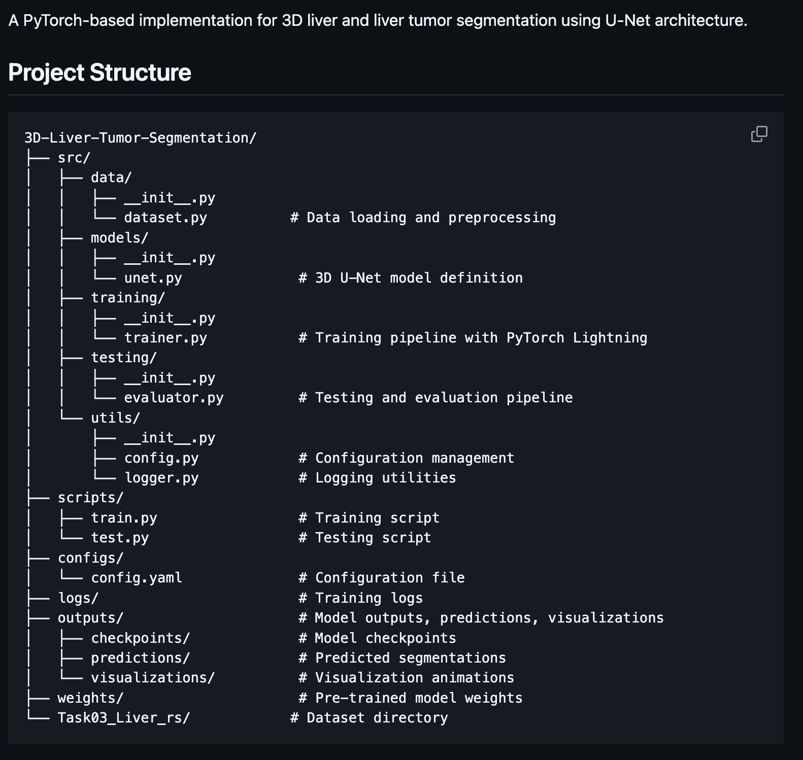
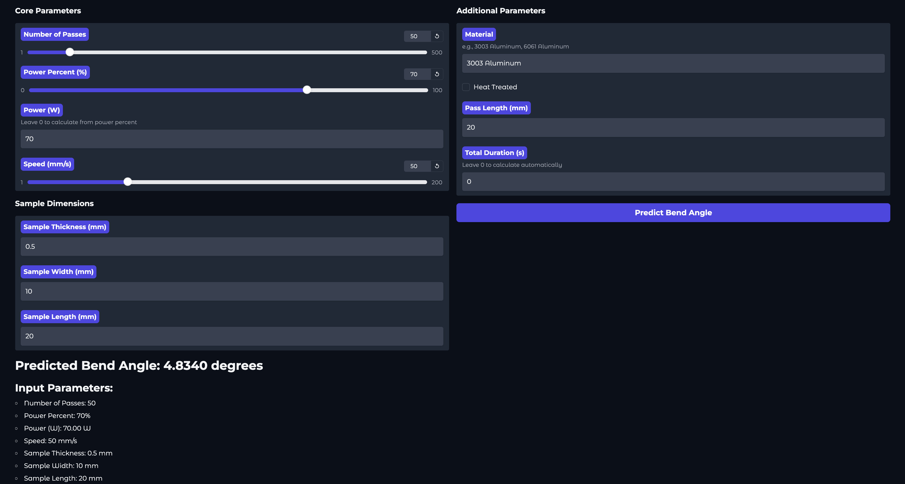

Applied Data Science
Raytheon | AI/ML Engineering Intern
CONFIDENTIAL / NDA PROTECTED
Focus: LLMs, C++/Rust, DARPA Cyber Grand Challenge
Currently working on integrating Large Language Models (LLMs) into Cyber Reasoning Systems to analyze and patch legacy Ada code. The project involves translating critical systems into memory-safe C++ and Rust, managing a 900+ hour engineering effort to modernize defense software infrastructure.
RetinAI | Diabetic Retinopathy Screening

Vision Language Model (VLM) Analysis Pipeline
The Challenge: Diabetic retinopathy is a leading cause of blindness, yet early detection remains inaccessible in many underserved communities.
The Solution: Developed an accessible screening tool utilizing Vision Language Models (VLMs). The system analyzes retinal images to automatically flag symptoms of retinopathy with high precision.
Impact: Designed to assist healthcare providers in resource-limited settings, enabling earlier intervention and preventing irreversible vision loss.
medxplAIn | 3D Liver Tumor Segmentation
U-Net Architecture & Project Directory
The Challenge: Liver cancer treatment relies on accurate segmentation for radiation therapy and diagnosis, but manual segmentation is subjective and time-consuming.
The Solution: Implemented "MedxplAIn," an end-to-end PyTorch pipeline for segmenting livers and tumors from 3D CT scan volumes. The system utilizes a 3D U-Net architecture to automate the extraction of regions of interest.
Impact: Reduces the segmentation workload from hours to minutes while standardizing diagnostic outputs for clinicians.
Laser Metal Bending | Predictive Modeling
Ensemble Regression Analysis
The Challenge: Achieving precise control of metal deformation requires accurate predictive modeling of complex thermal-mechanical interactions.
The Solution: Developed a comparative modeling framework using 16 different algorithms to predict deformation angles. I implemented advanced Ensemble Models (Voting, Stacking with Ridge Meta-Estimator, Gradient Boosting), Support Vector Machines (RBF/Poly kernels), and Neural Networks (MLPRegressor) to validate experimental data against simulations.
Outcome: Identified optimal regression strategies (RandomForest vs. XGBoost/CatBoost) to minimize prediction error, enabling robust control for non-contact manufacturing.
Skin Allergen Computer Vision
PRIVATE PROJECT
Focus: OpenCV, Python, Ensemble ML
Developed an automated diagnostic pipeline using OpenCV and Random Forest models to analyze skin prick tests. The system processes 500+ clinical images with >90% correlation to clinician scoring, reducing diagnosis time from 5 minutes to 45 seconds per patient.
Technical Stack
| Languages | Python, C++, Rust, SQL, R, MATLAB |
| Machine Learning | PyTorch, TensorFlow, Scikit-learn, OpenCV, LLMs, RAG |
| Data & Tools | Pandas, NumPy, Docker, Kubernetes, AWS, Git |